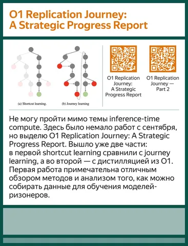
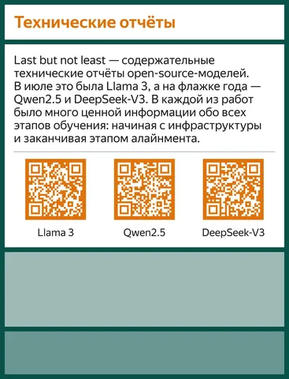

В 2024 году вышло так много статей по ML, что читать — не перечитать. Руководитель команды YandexGPT Alignment Андрей Бут поделился с нами работами, которые запомнились именно ему. Есть, чем заняться на досуге! А в комментариях рассказывайте, какие публикации ушедшего года запомнились вам и почему.
Статьи, которые упоминает Андрей:
— Is DPO Superior to PPO for LLM Alignment? A Comprehensive Study
— O1 Replication Journey: A Strategic Progress Report
— O1 Replication Journey — Part 2
— Техотчёт Llama 3
— Техотчёт Qwen2.5
— Техотчёт DeepSeek-V3
Душный NLP
